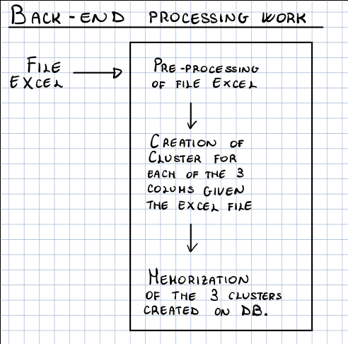
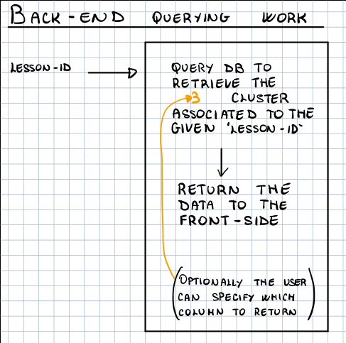
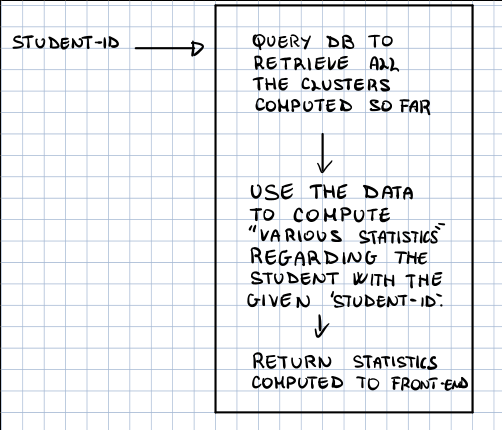

Progetto NLP
Table of Contents
In questo file sono descritte le cose da fare relative al progetto di Natural Language Processing dell'anno 2019/2020.
1 Risorse
Account gmail
email: torvergatanlp1920@gmail password: nlpisbad
2 Annotazione automatica del dataset
Utilizzo di tool automatici come Spacy e Repustate per annotazione automaticamente il dataset.
2.1 TODO Spacy - Vedere script Luca
Vedere come funziona spacy e vedere se lo script scritto da luca è sensato.
2.2 TODO Repustate - Analisi e implementazione
Vedere se ha senso utilizzare repustate per analizzare il sentiment delle frasi.
3 Clustering
Il calcolo del clustering deve essere fatto per lezione.
3.1 TODO Test del "Italian Word Embeddings"
Provare la risorsa trovata in http://hlt.isti.cnr.it/wordembeddings/ per passare dalle frasi a dei punti di uno spazio vettoriale.
3.2 TODO Applicazione algoritmo di clustering
Applicazione dell'algoritmo di clustering k-means per trovare cluster.
4 Testing del clustering
Utilizzare annotazione semantica svolta per capire se frasi simili vengono messe nello stesso cluster.
5 Back end
Utilizzare nodejs per fornire seguenti API:
Parte di processing:
Prende un file contenente corpus della giornata tramite file excel, elabora i dati, eventualmente PULENDOLI, e li memorizza internamente in un oracolo interno che contiene, per ogni lezione, i relativi cluster.
In formato grafico

Parte di querying:
Ritorna json con cluster di frasi per ogni "colonna" (meno chiaro, interessante, msg docente) data una lezione. Opzionale di specificare la colonna da ritornare, di default torna tutte e tre le colonne.
In formato grafico

Ritorna json con statistiche "interessanti" dato l'id dello studente rispetto all'intero corso.

Al fine di implementare la parte di back-end dobbiamo fare le seguenti cose:
5.1 TODO Accesso drive e gestione file excel
Ottenere l'accesso al drive e capire il formato dei file excel in cui sono riportate le risposte degli studenti alle tre domande per ogni lezione.
Al fine di accere al drive è stato creato un account gmail comune i cui dati per adesso sono
e-mail: torvergatanlp1920@gmail.com password: nlpisbad
5.2 TODO Finalizzare chain di pre-processing
Finalizzare la chain di pre-processing, ovvero capire quali sono le funzioni da eseguire e quali sono le tecnologie da utilizzare (es: python, java, etc.)
5.3 TODO Definire formato json per clusters
Definire il formato del file json nel quale andremo a memorizzare i tre cluster per ogni lezione.
5.4 TODO Finalizzare chain di processing
Finalizzare la chain di processing necessaria al fine di ottenere i clusters.
5.5 TODO Definire schema memorizzazione clusters
Definire come memorizzare i cluster ottenuti (scritti nel file json), all'interno del DB per poterli ottenere successivamente.
Una possibile idea è quella di utilizzare mongoDB come database.
5.6 TODO Definire statistihe da calcolare per studente
Definire le statitiche che bisogna calcolare per ogni singolo studente al fine di rispondere alla seconda tipologia di query.
6 Front end
Sviluppare in react una dashboard semplice.
Da vedere successivamente per specifiche sul front end.
7 Output finale richiesto
Aggregati per stessa lezione:
- Argomento meno chiaro.
- Argomento più interessante.
Quanti hanno capito il messaggio del docente.
Per fare quest'ultimo punto dobbiamo generare il messaggio del docente da quelli più comuni.
Aggregato per persona:
- Calcolare il numero di volte in cui la persona è finita tra i cluster più grandi per quanto riguarda i tre clustering.